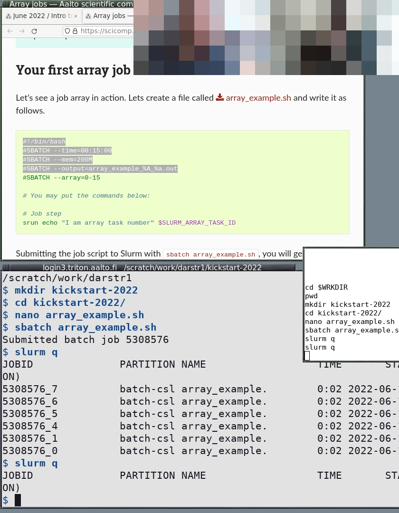

Instructor technical setup
See also
Instructor technical setup, online for screen sharing layouts.
Final checklist
Have you moved your configurations away and done the course setup instead (or left it unconfigured)?:
.bashrc(or equivalent),.gitconfig,.ssh,.conda, etc.Are you using a software environment as described in the workshop instructions (conda, virtualenv, etc). Is it clean and without extra stuff installed?
Is your setup as boring-looking as possible, if you are teaching at the beginning of the workshop? The first sessions aren’t the time for distractions.
Is your terminal
Dark text on light background? (if not: create a profile so you can switch now or in the future)
Do you know key-bindings to change the font size quickly?
Do you have command history set up? If in doubt, use prompt-log and
tailthe output in a separate smaller window.Do you have a clean web browser session (different profile for demos)?
If you use an advanced shell, do you have a simpler shell (bash) set up for the demos?
(if online) have you practiced Zoom screensharing “Share a portion of the screen” in portrait-mode? See Instructor technical setup, online.
(if online) have you checked your audio settings? Join a test meeting with someone and understand your microphone sound adjustments. Can you control it for the full range from very quiet to very loud, so that you can make whatever adjustments needed? Is your best microphone/headset ready? Audio quality and balance is critical.
Have you shown your setup to someone else for feedback?
Appearance matters. When you look at other professionally made videos online, they look good. As a presenter, you also need to work to make your screen look pleasing to the eye. It also has to be similar to a learner’s screen, so that they are not distracted with your different configuration or appearance.
Simple or fancy screen?
As a teacher of tech, you also need to make sure that your screen supports the learning process: you have conflicting goals of:
Making your screen look simple, to not distract from what you are trying to teach, and
Showing more advanced setups, so that others can learn and improve.
In general, try to use a simpler arrangement at the beginning of workshops. You, or other teachers, can begin showing more advanced screen layouts once learners are able to see what is important and what is extra.
Check with someone before you start teaching
Most importantly, get your setup done well in advance and show your co-teachers for feedback. Feedback and time to improve is very important to make things beautiful.
Clean your environment
Do you have fancy .bashrc, .gitconfig, etc files? Move them
away so that you are as plain and normal as possible - beyond
appearances, you don’t want to use any shortcuts that every learner
won’t have access to (telling learners to add some configuration won’t
work - some will miss it and be lost, or worse their system may have a
weird behavior in the future).
Relevant files that are sometimes a problem:
.bashrc.gitconfig.ssh/config,.ssh/authorized_keys.conda/*Any config for any program you will be demonstrating
Arrange your windows well
This is mostly the topic of Instructor technical setup, online (our recommendations for in-person window arrangements aren’t so up-to-date, but the same principles apply but you have a widescreen view).
For online teaching, you will want to screenshare a portion of your screen: half the screen in “portrait mode” so that the other half is available. See Instructor technical setup, online.
Desktop environment
Is your overall desktop environment “normal”-looking?
Do your window title bars take up lots of space? Is it possible to reduce their size for the teaching - you want as much space for large fonts as possible.
Since you will only be sharing a portion of the screen, or have a lower-resolution projector, these title bars take up more space relative to the content.
Same for desktop menu bars, etc.
Do you need to go into light-mode theme? Dark text on light background is much better than dark mode, so it is strongly recommended to do this.
Can you easily resize your windows for adjusting during teaching?
Web browser
Are you doing a lot in a web browser? Consider making a separate profile that is just for demos.
Install whatever basic safety extensions / ad blockers are most relevant, but keep it simple otherwise.
Can you turn off unneeded menu- and toolbars?
Does your web browser have a way to reduce its menu bars and other decoration size?
Firefox-based browsers: go to
about:configand setlayout.css.devPixelsPerPxto a value slightly smaller than one, like0.75. Be careful you don’t set it too small or large since it might be hard to recover! When you set it to something smaller than 1, all window decorations become smaller, and you compensate by zooming in on the website more (you can set the default zoom to be greater than 100% to compensate). Overall, you get more information and less distraction.
Terminal
Terminal color schemes
Dark text on light background, not dark theme. Research and our experience says that dark-text-on-light is better in some cases and similar in others.
Make a dedicated “demos” profile in your terminal emulator, if relevant. Or use a different terminal emulator just for demos.
You might want to make the background light grey, to avoid over-saturating people’s eyes and provide some contrast to the pure white web browser. (this was an accessibility recommendation when looking for ideal color schemes)
Do you have any yellows or reds in your prompt or program outputs? Adjust colors if possible.
Eliminate menu bars and any other decoration that uses valuable screen space.
Clearing the terminal
Don’t clear terminal often (or ever - un-learn CTRL-L if possible). Learner’s can follow as fast as you! More people will wonder what just got lost than are helped by seeing a blank screen. Push
ENTERa few times instead to add some white space.
Terminal size
Font should be large (a separate history terminal can have a smaller font).
Be prepared to resize the terminal and font as needed. Know and use keyboard shortcuts for changing the font size when you need to show more columns (it’s also OK if the terminal is wider than your screen if most of the right side is not that important to see). You can have a larger font normally, and make it smaller and the terminal wider when you have long lines that learners need to see.
Prompt
Your prompt should be minimal: few distractions, and not take up many columns of text.
Learners have to read your prompt quickly, understand what you entered, copy it, all the while not being distracted by everything else or your screen. Day 1 git-intro is not the time to have your fancy git-bash prompt, instead show them how to use git to get that information. Set an easily-viewable prompt.
prompt-log(see the next section on command line history) does this for you.The minimum to do is is
export PS1='\$ '.Blank line between entries:
export PS1='\n\$ '.Have a space after the
$or%or whatever prompt character you use.Strongly consider the bash shell. This is what most new people will use, and bash will be less confusing to them. (Later in workshops, using other shells and being more adventurous is OK - learners will know what is essential to the terminal and what is extra for your environment).
Command line history
You need to find a way to show the recent commands you have entered, outside of your main window, so that learners can see the recent commands.
Consider prompt-log by rkdarst (https://github.com/rkdarst/prompt-log/). It adds a interesting idea that the command you enter is also in color and also provides terminal history before the command returns (see below).
Arrange two terminals, so that there is the main work window and the history window with a font smaller size - the history can be off to the side.
See the following screenshot for an ideal arrangement:
{kind=link}

S10: HPC Kickstart course. Note the colors contrast of the windows and colors of the prompt and text. The history is smaller and doesn’t take up primary working space. The working directory is in the window titlebar.
Other command line history tools
We used to recommend these, and some are still recommended. But, the long text is a distraction by now, so it is hidden by default.
Also check the shell exporter by sabryr, which copies recent history to a remote server.
Simple: The simple way is PROMPT_COMMAND="history -a" and then
tail -f -n0 ~/.bash_history, but this doesn’t capture ssh,
subshells, and only shows the command after it is completed.
Better yet still simple: Many Software Carpentry instructors use this script, which sets the prompt, splits the terminal window using tmux and displays command history in the upper panel. Requirement: tmux
Better (bash): This prints the output before the command is run,
instead of after. Tail with tail -f ~/demos.out.
BASH_LOG=~/demos.out
bash_log_commands () {
# https://superuser.com/questions/175799
[ -n "$COMP_LINE" ] && return # do nothing if completing
[[ "$PROMPT_COMMAND" =~ "$BASH_COMMAND" ]] && return # don't cause a preexec for $PROMPT_COMMAND
local this_command=`HISTTIMEFORMAT= history 1 | sed -e "s/^[ ]*[0-9]*[ ]*//"`;
echo "$this_command" >> "$BASH_LOG"
}
trap 'bash_log_commands' DEBUG
Better (zsh): This works like above, with zsh. Tail with tail -f ~/demos.out.
preexec() { echo $1 >> ~/demos.out }
Better (fish): This works like above, but for fish. Tail with
tail -f ~/demos.out.
function cmd_log --on-event fish_preexec ; echo "$argv" >> ~/demos.out ; end
Better (tmuxp): This will save some typing. TmuxP is a Python program (pip install tmuxp) that gives you programmable tmux sessions. One configuration that works (in this case for fish shell):
session_name: demo
windows:
- window_name: demo
layout: main-horizontal
options:
main-pane-height: 7
panes:
- shell_command:
- touch /tmp/demo.history
- tail -f /tmp/demo.history
- shell_command:
- function cmd_log --on-event fish_preexec ; echo "$argv" >> /tmp/demo.history ; end
Windows PowerShell: In Windows Terminal,
a split can be made by pressing CTRL+SHIFT+=. Then, in one of the splits, the following
PowerShell command will start tracking the shell history:
Get-Content (Get-PSReadlineOption).HistorySavePath -Wait
Unfortunately, this only shows commands after they have been executed.
# used for the fish shell (note: untested)
tail -f -n 0 ~/fish_history | sed -u -e s'/- cmd:/ \>/'
# used for zsh shell (put this into a script file)
clear >$(tty)
tail -n 0 -f ~/.zsh_history | awk -F\; 'NF!=1{printf("\n%s",$NF)}NF==1{printf("n %s ",$1)}'